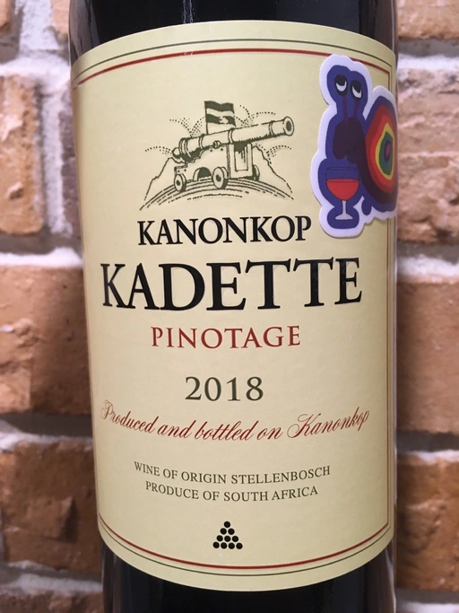

- Type
- Red Still, Dry
- Producer
- Kanonkop
- Vintage
- 2018
- Location
- South Africa, WO Stellenbosch
- Grapes
- Pinotage
- Alcohol
- 14
- Sugar
- 2.7
- Price
- 589 UAH, 379 UAH, 331 UAH
- Cellar
- N/A
Ratings
2020-09-16 - 7.00
Really great every day Pinotage by Kanonkop. Black cherry, blackberry and roasted meat. Medium+ tannins, quite low acidity, so it feels more sweet than it should.
2021-12-13 - 7.50
Tasting again in more than a year and this release clearly become much better. Neat bouquet of cherry, smoke, roasted meat, prune and forest floor. Good combination of acidity, tannin and juiciness making it quaffable. Still medium-full bodied with high alcohol. Long aftertaste with flavours of cherry and fallen leaves. Great value.
2022-11-06 - 7.50
Good entry-level Pinotage. A pleasant combination of coffee, dark chocolate, dark berries, and medicinal herbs. Already feels tired, but still has power for the last hike. Jammy and warm. Tannin is still grippy (like an old man that wants you to hear him out).